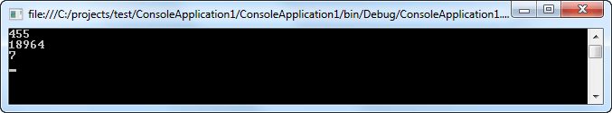
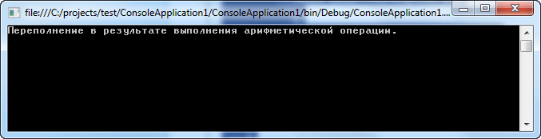

|
Преобразование типов Pascal.
ФУНКЦИИ
ПРЕОБРАЗОВАНИЯ ТИПОВ
|
round (x) |
— округляет вещественное число до ближайшего целого. |
|
trunc (x) |
— выдает целую часть вещественного числа, отбрасывая
дробную. |
Преобразование типов C#.
В программировании нередко значения переменных
одного типа присваиваются переменным другого типа. Например, в
приведенном ниже фрагменте кода целое значение типа int
присваивается переменной с плавающей точкой типа float:
int i;
float f;
i = 10;
f = i; // присвоить целое значение переменной типа float
Если в одной операции присваивания смешиваются совместимые типы
данных, то значение в правой части оператора присваивания
автоматически преобразуется в тип, указанный в левой его части.
Поэтому в приведенном выше фрагменте кода значение переменной i
сначала преобразуется в тип float, а затем присваивается
переменной f. Но вследствие строгого контроля типов далеко не
все типы данных в C# оказываются полностью совместимыми, а
следовательно, не все преобразования типов разрешены в неявном
виде. Например, типы bool и int несовместимы. Правда,
преобразование несовместимых типов все-таки может быть
осуществлено путем приведения. Приведение типов, по существу,
означает явное их преобразование.
Автоматическое преобразование типов
Когда данные одного типа присваиваются переменной другого типа,
неявное преобразование типов происходит автоматически при
следующих условиях:
оба типа совместимы
диапазон представления чисел целевого типа шире, чем у исходного
типа
Если оба эти условия удовлетворяются, то происходит расширяющее
преобразование. Например, тип int достаточно крупный, чтобы
вмещать в себя все действительные значения типа byte, а кроме
того, оба типа, int и byte, являются совместимыми целочисленными
типами, и поэтому для них вполне возможно неявное
преобразование.
Числовые типы, как целочисленные, так и с плавающей точкой,
вполне совместимы друг с другом для выполнения расширяющих
преобразований. Рассмотрим пример:
using System;
using System.Collections.Generic;
using System.Linq;
using System.Text;
namespace ConsoleApplication1
{
class Program
{
static void Main(string[] args)
{
short num1, num2;
num1 = 10;
num2 = 15;
Console.WriteLine("{0} + {1} = {2}",num1,num2,Sum(num1,num2));
Console.ReadLine();
}
static int Sum(int x, int y)
{
return x + y;
}
}
}
Обратите внимание на то, что метод Sum() ожидает поступления
двух параметров типа int. Тем не менее, в методе Main() ему на
самом деле передаются две переменных типа short. Хотя это может
показаться несоответствием типов, программа будет
компилироваться и выполняться без ошибок и возвращать в
результате, как и ожидалось, значение 25.
Причина, по которой компилятор будет считать данный код
синтаксически корректным, связана с тем, что потеря данных здесь
невозможна. Поскольку максимальное значение (32767), которое
может содержать тип short, вполне вписывается в рамки диапазона
типа int (максимальное значение которого составляет 2147483647),
компилятор будет неявным образом расширять каждую переменную
типа short до типа int. Формально термин "расширение"
применяется для обозначения неявного восходящего приведения
(upward cast), которое не приводит к потере данных.
Приведение несовместимых типов
Несмотря на всю полезность неявных преобразований типов, они
неспособны удовлетворить все потребности в программировании,
поскольку допускают лишь расширяющие преобразования совместимых
типов. А во всех остальных случаях приходится обращаться к
приведению типов. Приведение — это команда компилятору
преобразовать результат вычисления выражения в указанный тип. А
для этого требуется явное преобразование типов. Ниже приведена
общая форма приведения типов:
(целевой_тип) выражение
Здесь целевой_тип обозначает тот тип, в который желательно
преобразовать указанное выражение.
Если приведение типов приводит к сужающему преобразованию, то
часть информации может быть потеряна. Например, в результате
приведения типа long к типу int часть информации потеряется,
если значение типа long окажется больше диапазона представления
чисел для типа int, поскольку старшие разряды этого числового
значения отбрасываются. Когда же значение с плавающей точкой
приводится к целочисленному, то в результате усечения теряется
дробная часть этого числового значения. Так, если присвоить
значение 1,23 целочисленной переменной, то в результате в ней
останется лишь целая часть исходного числа (1), а дробная его
часть (0,23) будет потеряна. Давайте рассмотрим пример:
using System;
using System.Collections.Generic;
using System.Linq;
using System.Text;
namespace ConsoleApplication1
{
class Program
{
static void Main(string[] args)
{
int i1 = 455, i2 = 84500;
decimal dec = 7.98845m;
// Приводим два числа типа int
// к типу short
Console.WriteLine((short)i1);
Console.WriteLine((short)i2);
// Приводим число типа decimal
// к типу int
Console.WriteLine((int)dec);
Console.ReadLine();
}
}
}
Результатом работы данной программы будет:

Обратите внимание, что переменная i1 корректно
преобразовалась в тип short, т.к. ее значение входит в диапазон
этого типа данных. Преобразование переменной dec в тип int
вернуло целую часть этого числа. Преобразование переменной i2
вернуло значение переполнения 18964 (т.е. 84500 - 2*32768).
Перехват сужающих преобразований данных
В предыдущем примере приведение переменной i2 к типу short не
является приемлемым, т.к. возникает потеря данных. Для создания
приложений, в которых потеря данных должна быть недопустимой, в
C# предлагаются такие ключевые слова, как checked и unchecked,
которые позволяют гарантировать, что потеря данных не окажется
незамеченной.
По умолчанию, в случае, когда не предпринимается никаких
соответствующих исправительных мер, условия переполнения
(overflow) и потери значимости (underflow) происходят без выдачи
ошибки. Обрабатывать условия переполнения и потери значимости в
приложении можно двумя способами. Это можно делать вручную,
полагаясь на свои знания и навыки в области программирования.
Недостаток такого подхода в том, что даже в случае приложения
максимальных усилий человек все равно остается человеком, и
какие-то ошибки могут ускользнуть от его глаз.
К счастью, в C# предусмотрено ключевое слово checked. Если
оператор (или блок операторов) заключен в контекст checked,
компилятор C# генерирует дополнительные CIL-инструкции,
обеспечивающие проверку на предмет условий переполнения, которые
могут возникать в результате сложения, умножения, вычитания или
деления двух числовых типов данных.
В случае возникновения условия переполнения во время выполнения
будет генерироваться исключение System.OverflowException.
Давайте рассмотрим пример, в котором будем передавать в консоль
значение исключения:
using System;
using System.Collections.Generic;
using System.Linq;
using System.Text;
namespace ConsoleApplication1
{
class Program
{
static void Main(string[] args)
{
byte var1 = 250;
byte var2 = 150;
try
{
byte sum = checked((byte)(var1+var2));
Console.WriteLine("Сумма: {0}", sum);
}
catch (OverflowException ex)
{
Console.WriteLine(ex.Message);
Console.ReadLine();
}
}
}
}
Результат работы данной программы:

Преобразование типов Python.
При написании программ часто возникает
необходимость изменить тип данных, чтобы иметь возможность
по-другому манипулировать значениями. Например, нам может
потребоваться объединить числовые значения со строками или
представить десятичные дроби в виде целых чисел.
Рассмотрим преобразовании чисел, строк,
кортежей и списков. Также вы найдете здесь примеры, которые
помогут вам понять, в каких случаях может понадобиться
преобразование данных.
Преобразование числовых типов
В Python есть два числовых типа данных: целые числа (integer) и
числа с плавающей запятой (float).
Бывает, вы работаете над чужим кодом и вам нужно преобразовать
целое число в число с плавающей запятой (и наоборот). Или вы
можете обнаружить, что использовали целое число, хотя на самом
деле вам нужно число с плавающей запятой. Python имеет
встроенные методы, позволяющие легко выполнить все эти
преобразования.
Преобразование целых чисел в числа с плавающей запятой
Метод Python float() преобразует целые числа в числа с плавающей
запятой. Чтобы использовать эту функцию, добавьте в скобки целое
число:
float(57)
В этом случае 57 будет преобразовано в 57.0.
Этот метод можно использовать и с переменной. Объявим f равным
57, а затем выведем новое значение с плавающей запятой:
f = 57
print(float(f))
Результат:
57.0
Используя функцию float(), мы можем преобразовывать целые числа
в числа с плавающей запятой.
Преобразование чисел с плавающей запятой в целые числа
Python также имеет встроенную функцию для преобразования чисел с
плавающей запятой в целые числа: int().
Функция int() работает аналогично функции float(). Чтобы
преобразовать десятичную дробь в целое число, вы можете добавить
его внутрь скобок:
int(390.8)
В этом случае 390.8 будет преобразовано в 390.
Эту функцию можно использовать и с переменными. Давайте объявим
b равным 125.0, а c — равным 390.8, а затем применим к
переменным функцию int():
b = 125.0
c = 390.8
print(int(b))
print(int(c))
Результат:
125
390
При преобразовании чисел с плавающей запятой
в целые числа с
помощью функции int() Python отсекает все, что идет после
запятой. Мы можем ожидать, что 390,8 округлится до 391, но с
применением только лишь функции int() этого не произойдет.
Преобразование чисел путем деления
В Python 3 при делении одного целого числа на другое целое число
результат преобразуется в число с плавающей запятой. То есть,
если разделить 5 на 2, в Python 3 вы получите число с плавающей
запятой:
a = 5 / 2
print(a)
2.5
В Python 2, так как вы имели дело с двумя целыми числами, вы
получите ответ в виде целого числа: 5 / 2 = 2. Прочтите «Python
2 vs Python 3: Практические соображения» для получения
дополнительной информации о различиях между Python 2 и Python 3.
Преобразования со строками
Тип данных string представляет собой последовательность из
одного или нескольких символов (буквы, цифры, символы). Строки —
это распространенная форма данных в компьютерных программах. Нам
может потребоваться довольно часто преобразовывать строки в
числа и наоборот, особенно когда мы получаем данные, созданные
пользователем.
Преобразование чисел в строки
Числа в строки можно преобразовать с помощью метода str(). Мы
передаем число или переменную в скобки метода, а на выходе
получаем строковое значение.
Давайте сначала рассмотрим преобразование целых чисел. Чтобы
преобразовать целое число 12 в строку, передадим его в метод str():
str(12)
При запуске str(12) в интерактивной оболочке Python (чтобы войти
в оболочку, введите python в окне терминала) вы получите
следующий вывод:
'12'
Кавычки вокруг числа 12 означают, что оно теперь является
строковым значением, а не целым числом.
Практический смысл преобразования чисел в строки становится
понятнее, когда вы работаете с переменными. Допустим, мы хотим
отслеживать ежедневный прогресс программирования пользователя.
Для этого мы вводим, сколько строк кода он пишет за раз. Мы
хотели бы давать обратную связь пользователю. Чтобы составить
предложение, будем выводить одновременно и строковые, и
целочисленные значения:
user = "Sammy"
lines = 50
print("Congratulations, " + user + "! You just wrote " + lines +
" lines of code.")
Когда мы запускаем этот код, мы получаем следующую ошибку:
TypeError: Can't convert 'int' object to str implicitly
Мы не можем объединять строки и целые числа в Python, поэтому
нам придется преобразовать переменную lines в строковое
значение:
user = "Sammy"
lines = 50
print("Congratulations, " + user + "! You just wrote " + str(lines)
+ " lines of code.")
Теперь при запуске кода мы получим следующий вывод,
поздравляющий нашего пользователя с прогрессом:
Congratulations, Sammy! You just wrote 50 lines of code.
Если мы хотим преобразовать в строку не целое число, а число с
плавающей запятой, порядок действий остается прежним. Мы
передаем в метод str() число с плавающей запятой, а возвращено
будет строковое значение. Передавать в метод можно как само
число, так и переменную:
print(str(421.034))
f = 5524.53
print(str(f))
'421.034'
'5524.53'
Чтобы убедиться, что все правильно, мы можем объединить в выводе
преобразованное число и строковые значения:
f = 5524.53
print("Sammy has " + str(f) + " points.")
Sammy has 5524.53 points.
Мы можем быть уверены, что наш float был правильно преобразован
в строку, потому что конкатенация была выполнена без ошибок.
Преобразование строк в числа
Строки могут быть преобразованы в числа при помощи методов int()
и float().
Если в вашей строке нет десятичных знаков, вы, скорее всего,
захотите преобразовать ее в целое число с помощью метода int().
Давайте возьмем пример пользователя Сэмми, отслеживающего
количество написанных строк кода. Чтобы предоставить
пользователю более интересную обратную связь, мы можем проводить
с полученными значениями какие-то математические действия. Но в
настоящее время эти значения хранятся в строках:
lines_yesterday = "50"
lines_today = "108"
lines_more = lines_today - lines_yesterday
print(lines_more)
TypeError: unsupported operand type(s) for -: 'str' and 'str'
Поскольку два числовых значения хранились в строках, мы получили
ошибку. Операнд «-» для вычитания не является допустимым
операндом для двух строковых значений.
Давайте изменим код, чтобы включить в него метод int(). Он
преобразует строки в целые числа и позволит нам выполнять
математические действия со значениями, которые изначально были
строками.
lines_yesterday = "50"
lines_today = "108"
lines_more = int(lines_today) - int(lines_yesterday)
print(lines_more)
58
Переменная lines_more автоматически является целым числом, и в
этом примере она равна числовому значению 58.
В приведенном выше примере мы также можем преобразовать строчные
значения в числа с плавающей запятой, используя метод float()
вместо метода int(). В этом случае вместо 58 мы получим число с
плавающей запятой — 58.0. Пользователь Сэмми зарабатывает очки в
дробных числах:
total_points = "5524.53"
new_points = "45.30"
new_total_points = total_points + new_points
print(new_total_points)
5524.5345.30
В этом случае использование операнда «+» с двумя строками
является допустимой операцией. Но эта операция объединяет две
строки, а не складывает два числовых значения вместе. В
результате наш output выглядит необычно, поскольку это просто
два значения рядом друг с другом.
Перед выполнением любых математических операций нам нужно
преобразовать эти строки в числа с плавающей запятой с помощью
метода float():
total_points = "5524.53"
new_points = "45.30"
new_total_points = float(total_points) + float(new_points)
print(new_total_points)
5569.83
Теперь, когда мы преобразовали две строки в числа с плавающей
запятой, мы получаем ожидаемый результат: сумму чисел 45.30 и
5524.53.
Если мы попытаемся при помощи метода int() конвертировать
строку, представляющую собой десятичную дробь, в целое число, мы
получим ошибку:
f = "54.23"
print(int(f))
ValueError: invalid literal for int() with base 10: '54.23'
Преобразование строк в числа позволяет нам быстро изменять тип
данных, с которым мы работаем. Благодаря этому мы можем
выполнять математические операции с числовыми значениями,
изначально сохраненными в строчном виде.
|